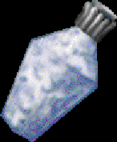

|  |
No one knows what this milky white liquid is, or where it comes from, save for a handful of the world's alchemists. It is rumored that its ingredients are cheap and its distillation fairly simple, but the secret to its creation is closely guarded, mostly just to keep the price shored up.
|
||||